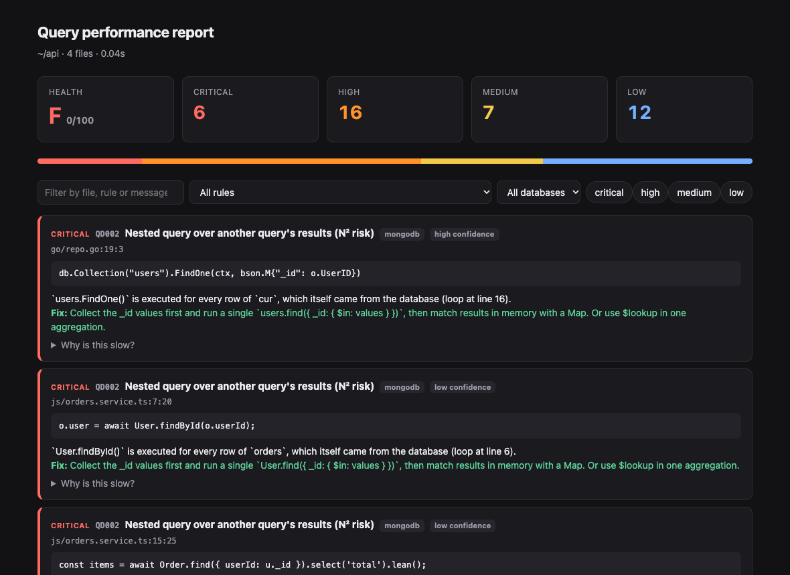
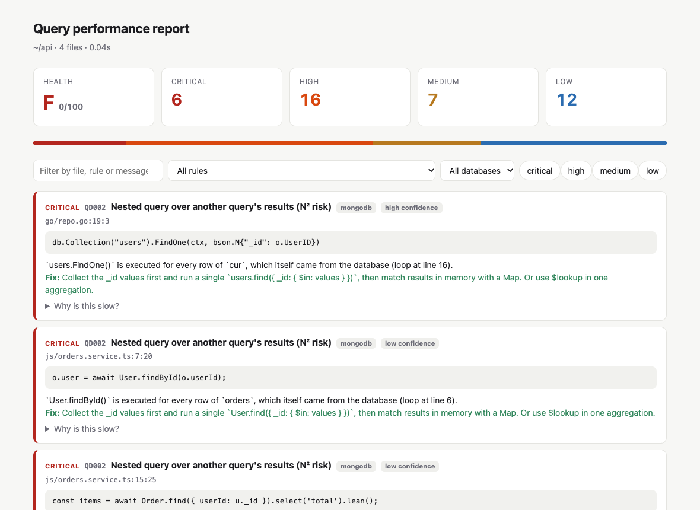

N+1 and nested queries
A query inside a loop, a .map() or a list comprehension. When the loop walks the results of another query, it's flagged as N² and critical.
for (const o of orders) {
await User.findById(o.userId)
}
One command grades your codebase from A to F and lists every N+1 query, write in a loop, unbounded read and index-hostile filter in your MongoDB and SQL code, ranked from critical to low, with the fix.
❯ npx querydig querydig v0.1.1 — slow-query scan of ~/api 412 files in 0.31s CRITICAL QD002 Nested query over another query's results (N² risk) [mongodb] src/orders/orders.service.ts:42:20 │ o.user = await User.findById(o.userId); `User.findById()` runs for every row of `orders`, which came from the database. fix: Collect the ids and run one User.find({ _id: { $in: ids } }), then join with a Map. MEDIUM MQ005 sort() without limit() [mongodb] src/search/search.ts:18:10 │ return Product.find({ status }).sort({ createdAt: -1 }).lean(); fix: Add .limit(n) and createIndex({ status: 1, createdAt: -1 }). Summary CRITICAL 2 HIGH 7 MEDIUM 5 LOW 9 Query health: C (71/100) ❯
Understands the ORMs and drivers you already use
They pass code review, work fine on a laptop with 50 rows, and fall over at 5 million. querydig catches them from the source code, before they ship.
A query inside a loop, a .map() or a list comprehension. When the loop walks the results of another query, it's flagged as N² and critical.
One updateOne, save() or INSERT per item means one round-trip and one index update per item. querydig points you to the bulk API.
find({}), findMany(), objects.all() or db.Find(&rows) with no filter and no limit read the whole table, and get slower every day.
Unanchored or case-insensitive $regex, LIKE '%term', LOWER(col) = ?, $where and ORDER BY RAND(). None of them can use an index.
$lookup before $match, sort() without limit(), deep skip() and OFFSET pages. Each one comes with a suggested index or keyset rewrite.
arr.find(x => …), Python str.find(), polling while loops, batch jobs and loops over collections are left alone. Tests and migrations are skipped by default.
querydig explains the cost in plain words and shows the rewrite. Here's the most common one it finds: a query per row.
// 1 query for orders, then 1 per order const orders = await Order.find({ status: 'open' }); for (const o of orders) { o.user = await User.findById(o.userId); }
const orders = await Order.find({ status: 'open' }).lean(); const ids = orders.map((o) => o.userId); const users = await User.find({ _id: { $in: ids } }).lean(); const byId = new Map(users.map((u) => [String(u._id), u])); for (const o of orders) o.user = byId.get(String(o.userId));
Every finding gets a severity from what it costs at scale, not a style preference. Loop depth and data flow raise it automatically.
LIKE '%x'skip() and OFFSET paging$match, non-sargable WHERESELECT *.lean()count used as an exists checkA score from 0 to 100, adjusted for repo size, so you can track whether things are improving.
No agents, no proxies, no query logs. Just your repository.
Every JS, TS, Python and Go file is parsed with tree-sitter in a pool of worker threads. Your .gitignore is respected.
Calls to Mongoose, Prisma, Django, GORM and a dozen other ORMs and drivers become query records, along with their filters, limits and chained calls.
Loop depth, iterating callbacks and variables that hold query results are tracked to tell a real N+1 from a batch job.
Findings are ranked by severity, each with the code, why it's slow and how to fix it, in the format your team reads.
Add --format html and you get one self-contained file to share or attach to a ticket. It has filters by severity, rule, database and file, and a before/after example on every finding.


Add one step to any pipeline. Existing issues go into a baseline, so only new ones fail the build and the team can fix the backlog at its own pace.
--fail-on high exits with code 1 on high or critical findings.--baseline lets known issues through, so you only gate on new ones.--diff origin/main scans only the files a PR changed.# .github/workflows/querydig.yml name: querydig on: [pull_request] jobs: scan: runs-on: ubuntu-latest steps: - uses: actions/checkout@v7 with: { fetch-depth: 0 } - uses: actions/setup-node@v7 with: { node-version: 22 } - run: npx -y querydig --diff origin/${{ github.base_ref }} --fail-on high
# .gitlab-ci.yml querydig: image: node:22 script: - npx -y querydig --format md > querydig.md || true - npx -y querydig --fail-on high artifacts: when: always paths: [querydig.md]
# record today's issues once npx querydig --update-baseline # then, in any pipeline or pre-push hook npx -y querydig --baseline .querydig-baseline.json --fail-on high # shareable report as a build artifact npx -y querydig --format html -o querydig-report.html
querydig is a static analyser that runs locally. It makes no network calls, and you don't need database credentials to scan.
No telemetry, no account, no API key. It works the same on a plane as in CI.
Findings come from your source code, so there's nothing to connect to and nothing it could change.
MIT licensed. Every rule is plain TypeScript you can read, change or switch off.
Run npx querydig explain <RULE> for a before/after example. Change a rule's severity or switch it off in querydig.config.json.
Can't find what you need? Open an issue. Feature requests for new ORMs and languages are very welcome.
No. querydig reads source code only. A read-only live mode that pulls profiler and EXPLAIN data is on the roadmap, and it will always be opt-in.
JavaScript and TypeScript (Mongoose, the MongoDB driver, Prisma, TypeORM, Sequelize, pg, mysql2, knex raw), Python (PyMongo, Motor, Django ORM, SQLAlchemy, DB-API cursors) and Go (mongo-go-driver, GORM, xorm, database/sql). Raw SQL strings are checked in every language.
Tests, specs, fixtures, migrations, seeds and benchmarks are skipped by default. Polling and batching loops, loops over collections, and array or string helpers aren't treated as queries. On Gitea (about 2,200 Go files) it reports 16 findings in under a second. To silence one, add // querydig-ignore QD001.
Run npx querydig --update-baseline once and commit .querydig-baseline.json. Then run --baseline .querydig-baseline.json --fail-on high in CI, so only newly introduced issues fail the build.
Node.js 22.12 or newer. Run it with npx querydig, or add it as a dev dependency with npm i -D querydig and an npm script.
Yes. It's MIT licensed open source, and there's nothing paid. Issues and pull requests are welcome on GitHub.
Open a terminal in any repo. You get a ranked list of slow queries, and an HTML report you can share with the team.